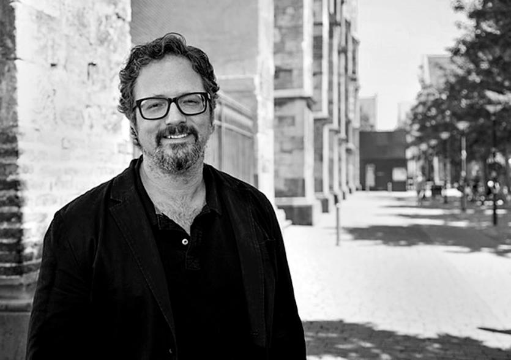

Biografía
Arte interactivo y participación
Rafael Lozano-Hemmer es un artista contemporáneo reconocido por sus instalaciones interactivas que combinan tecnología, arquitectura y participación del público.
Sus proyectos utilizan sensores, proyecciones, luces y sistemas digitales para responder en tiempo real a estímulos como el movimiento, la voz o los datos biométricos.
A través de estas obras, explora temas como la vigilancia, la identidad, la memoria y la relación entre lo individual y lo colectivo.
Trayectoria y proyección internacional
Nacido en México y con formación en química física, Lozano-Hemmer desarrolló una carrera artística orientada al uso crítico de la tecnología.
A lo largo de su trayectoria, ha presentado instalaciones en espacios públicos, museos y bienales internacionales.
Su trabajo ha sido ampliamente reconocido por su capacidad para involucrar al público y generar experiencias participativas.